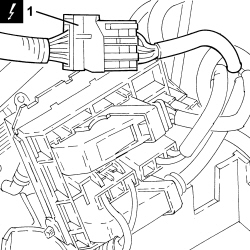
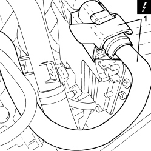
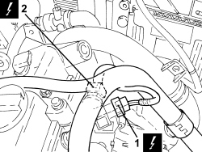
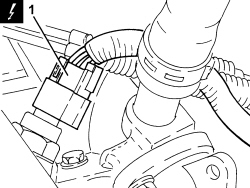
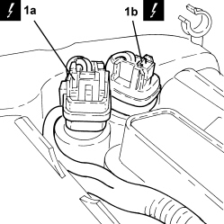
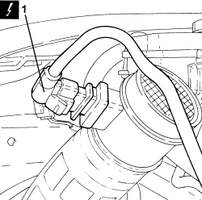
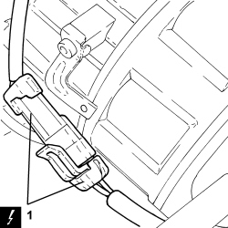
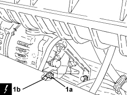
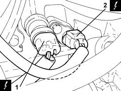
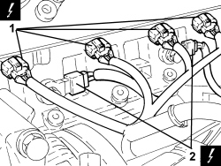

1056F94 SYSTEM CABLE LOOM ON ENGINE - R.R.
- Path
- Procedures > 10 ENGINE > 1056 PETROL INJECTION SYSTEM > 1056F PETROL DIRECT INJECTION SYSTEM > 1056F94 SYSTEM CABLE LOOM ON ENGINE - R.R.
- Kind
- repair procedure (removal / refitting; the operation number is the code)
- Applies to
- engines: 2.2 JTS, 3.2 JTS; all production periods
- Interactive page
- https://sloeber94.github.io/elrnDB-aBrrSpdr/en/#/946001933
Applies to: engines: 2.2 JTS; all production periods
 Removing
Removing
 Refitting
Refitting- Position the vehicle on a lift.
Op. 1072B50 AIR CHAMBER - R.R.
Op. 5530B52 BATTERY SUPPORT/DRIP TRAY - R.R
- Undo the bolts and remove the ignition coil cover.
1. Open the junction unit cover and disconnect the electrical connections.
Description | Connector | |
|---|---|---|
1 | Engine compartment junction unit |

Applies to: engines: 2.2 JTS; all production periods
1. Disconnect the electrical connection from the electronic injection system control unit.
Description | Connector | |
|---|---|---|
1 | Engine management control unit |

Applies to: engines: 2.2 JTS; all production periods
1. Disconnect the electrical connection from the fuel pressure regulator on the air intake/fuel manifold duct.
Description | Connector | |
|---|---|---|
1 | Fuel pressure regulator |
2. Disconnect the electrical connection from the fuel pressure sensor.
Description | Connector | |
|---|---|---|
2 | Fuel pressure sensor |

Applies to: engines: 2.2 JTS; all production periods
1. Disconnect the electrical connection from the engine coolant temperature sensor.
Description | Connector | |
|---|---|---|
1 | Engine coolant temperature sensor/sender unit |

Applies to: engines: 2.2 JTS; all production periods
1. Disconnect the electrical connections (1a) and (1b) from the phase transformer electromagnets.
Description | Connector | |
|---|---|---|
1a | Exhaust side phase transformer solenoid valve |
Description | Connector | |
|---|---|---|
1b | Inlet side phase transformer solenoid valve |

Applies to: engines: 2.2 JTS; all production periods
1. Disconnect the electrical connection from the air flow meter.
Description | Connector | |
|---|---|---|
1 | Air flow meter |

Applies to: engines: 2.2 JTS; all production periods
1. Disconnect the electrical connection of the air conditioner compressor.
Description | Connector | |
|---|---|---|
1 | Air conditioning compressor engagement electro-magnet | See L020 AIR CONDITIONING COMPRESSOR ENGAGEMENT ELECTRO-MAGNET |

Applies to: engines: 2.2 JTS; all production periods
1. Undo the nut (1a) and disconnect the earth lead (1b) from the alternator.
Description | Connector | |
|---|---|---|
1b | Alternator |

Applies to: engines: 2.2 JTS; all production periods
1. Disconnect the electrical connection from the engine oil pressure warning light switch.
Description | Connector | |
|---|---|---|
1 | Insufficient engine oil pressure sensor (switch) |
2. Disconnect the electrical connection from the engine rpm sensor.
Description | Connector | |
|---|---|---|
2 | Engine rpm sensor |

Applies to: engines: 2.2 JTS; all production periods
1. Disconnect the electrical connections from the injectors.
Description | Connector | |
|---|---|---|
1 | Injector |
2. Disconnect the electrical connection for the detonation sensor.
Description | Connector | |
|---|---|---|
2 | Detonation sensor - 2 |

Applies to: engines: 2.2 JTS; all production periods
- Release the system cable loom from the fastenings and remove it.
Applies to: engines: 2.2 JTS; all production periods
Refitting
Removing- Place the system cable loom in its housing and secure it.
- Connect the electrical connection for the detonation sensor.
- Connect the electrical connections to the injectors.
- Connect the electrical connection for the engine rpm sensor.
- Connect the electrical connection to the engine oil pressure warning light switch.
- Connect the earth lead to the alternator and tighten the nut.
- Connect the electrical connection to the air conditioning compressor.
- Connect the electrical connection to the air flow meter.
- Connect the electrical connections to the phase transformer electromagnets.
- Connect the electrical connection to the engine coolant temperature sensor.
- Connect the electrical connection to the fuel pressure sensor.
- Connect the electrical connection to the fuel pressure regulator on the air intake/fuel manifold duct.
- Connect the electrical connections to the electronic power module.
- Connect the electrical connections to the cam angle sensors.
- Connect the electrical connection to the electronic injection system control unit.
- Connect the electrical connections and close the junction unit cover.
- Place the ignition coil cover back in its housing and tighten the bolts.
Op. 5530B52 BATTERY SUPPORT/DRIP TRAY - R.R
Op. 1072B50 AIR CHAMBER - R.R.
- Remove the vehicle from the lift.
Applies to: engines: 3.2 JTS; all production periods
Topics linked from this page (22)
- 1004B10 POWER UNIT WITH MANUAL GEARBOX - R.R
- 1004D10 POWER UNIT (MANUAL GEARBOX), REMOVED, DISMANTLE AND REASSEMBLE
- 1004D40 ENGINE - POSITION ON STAND AND REMOVE
- 1004E10 ENGINE, REMOVED - REMOVE CYLINDER HEAD AND OIL SUMP FOR INSPECTION - INCLUDES POSITIONING ON STAND AND REMOVAL
- 1004E20 ENGINE - DISMANTLE AND REASSEMBLE FOLLOWING OPERATION 1004E10 - WASH AND CHECK DISMANTLED PARTS - REFIT CYLINDER HEAD AND OIL SUMP - DOES NOT INCLUDE REPAIRS TO CYLINDER HEAD AND AUXILIARY UNIT
- 1072B50 AIR CHAMBER - R.R.
- 5530B10 BATTERY - R+R
- 5530B52 BATTERY SUPPORT/DRIP TRAY - R.R
- A010 ALTERNATOR
- B001 JUNCTION UNIT
- K030 ENGINE OIL PRESSURE SENSOR (SWITCH)
- K036 ENGINE COOLANT TEMPERATURE SENSOR/SENDER UNIT
- K041 AIR FLOW METER
- K046 RPM SENSOR
- K050 DETONATION SENSOR
- K083 FUEL PRESSURE SENSOR
- L020 AIR CONDITIONING COMPRESSOR ENGAGEMENT ELECTRO-MAGNET
- M010 ENGINE MANAGEMENT ECU
- N070 INJECTOR
- N077 FUEL PRESSURE REGULATOR
- N092 PHASE SHIFTER SOLENOID VALVE ON INTAKE SIDE
- N093 PHASE SHIFTER SOLENOID VALVE ON EXHAUST SIDE